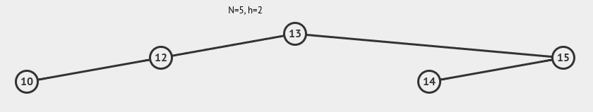

Disciplinas
-
ESTRUTURA DE DADOS. Concluído
Materiais
- Prof° Especialista: Gedson Faria, Graziela Santos de Araújo e Jonathan de Andrade Silva.
- Iniciado em domingo, 2 jun 2024, 11:35
- Estado Finalizada
- Concluída em domingo, 2 jun 2024, 12:30
- Tempo empregado 54 minutos 47 segundos
- Avaliar 8,00 de um máximo de 10,00(80%)
Questionário ✅ ❌
Pergunta 1
A inserção das chaves 35, 50, 40, 25, 30, 60, 78, 20 e 28, nessa ordem, em uma AVL inicialmente vazia, necessita de um total de quantas rotações para que a árvore se mantenha balanceada durante todo o processo? Informe apenas o número, sem espaços ou outros símbolos.
visualgo Resposta: 3. ✅Resolução:
Pergunta 2
Dada uma AVL T, a remoção de um nó qualquer dessa árvore, digamos de chave x, e sua inserção logo em seguida vai resultar, necessariamente, na árvore original.
Escolha uma opção: Verdadeiro ou Falso.
Resposta: Falso. ✅Resolução:
- A remoção e subsequente reinserção de um nó em uma árvore AVL não garantem que a árvore retornará exatamente ao seu estado original. A necessidade de balanceamento após essas operações pode alterar a estrutura da árvore.
Pergunta 3
É correto afirmar que toda árvore binária de busca completa é uma AVL?
Escolha uma opção: Verdadeiro ou Falso.
Resposta: Verdadeiro. ✅Resolução:
- Uma árvore binária de busca (BST) é completa se todos os níveis, exceto possivelmente o último, estão completamente preenchidos e todos os nós são o mais à esquerda possível no último nível.
- Uma árvore AVL é uma árvore binária de busca autobalanceada onde, para cada nó, a altura das subárvores esquerda e direita difere em no máximo uma unidade.
- Uma árvore binária de busca completa é necessariamente uma árvore AVL porque ela sempre satisfaz a condição de balanceamento que define uma árvore AVL.
Pergunta 4
Em que ordem as chaves 88, 89, 90, 91, 92, 93 e 94 devem ser inseridas em uma AVL inicialmente vazia de tal forma que nenhuma rotação seja necessária para que ela se mantenha balanceada durante todo o processo de inserção? Sua resposta deve seguir o seguinte formato (sem espaços e separado por virgula): chave,chave,chave,chave,...,chave.
Resposta: e. 4 e 15. ✅Resolução:
Inserir as chaves de maneira que cada inserção mantenha a propriedade AVL, ou seja, a diferença de altura entre as subárvores de qualquer nó deve ser no máximo 1.
visualgo- Primeiro inserimos o valor mediano, 91.
- Em seguida, inserimos o valor mediano das sublistas esquerda (88, 89, 90) e direita (92, 93, 94).
- Continuamos esse processo recursivamente.
Ordem de inserção:
- Inserir 91 (mediana de 88 a 94)
- Inserir 89 (mediana de 88 a 90)
- Inserir 93 (mediana de 92 a 94)
- Inserir 88 (mediana de 88)
- Inserir 90 (mediana de 90)
- Inserir 92 (mediana de 92)
- Inserir 94 (mediana de 94)
Pergunta 5
Uma AVL com n nós possui sua altura limitada superiormente por qual função f( n )?
Resposta: f(n) = log₂(n + 1). ❌Resolução:
- A altura de uma árvore AVL com n nós é limitada superiormente por uma função logarítmica. Especificamente, a altura h(n) de uma árvore AVL com n nós é O(log n). Mais formalmente, a altura de uma árvore AVL é limitada superiormente pela função f(n) = log₂(n + 1).
Pergunta 6
Dentre as sequências de inserção de chaves a seguir, em uma AVL inicialmente vazia, qual delas implica em uma rotação à direita, uma dupla à direita e uma dupla à esquerda, nessa ordem (mas não necessariamente uma seguida da outra) na árvore?
Escolha uma opção:
- a. 2, 3, 5, 7, 6 e 10.
- b. 6, 7, 5, 2, 3 e 10.
- c. 10, 6, 5, 7, 3 e 2.
- d. 10, 5 , 7, 6, 3 e 2.
- e. 10, 3, 2, 5, 7 e 6.
Resolução:
- Rotação à Direita: Acontece quando a inserção faz com que a altura da subárvore esquerda de um nó aumente muito mais do que a da subárvore direita.
- Dupla à Direita: Acontece quando a inserção faz com que a altura da subárvore esquerda de um nó aumente muito mais do que a da subárvore direita, e após uma rotação simples à direita, a altura da subárvore direita desse nó aumenta muito mais do que a da subárvore esquerda.
- Dupla à Esquerda: Acontece quando a inserção faz com que a altura da subárvore direita de um nó aumente muito mais do que a da subárvore esquerda, e após uma rotação simples à esquerda, a altura da subárvore esquerda desse nó aumenta muito mais do que a da subárvore direita.
Pergunta 7
É correto afirmar que toda árvore binária de busca é uma AVL.
Escolha uma opção: Verdadeiro ou Falso.
Resposta: Falso. ✅Resolução:
- Uma árvore binária de busca é uma estrutura de dados na qual cada nó possui no máximo dois filhos, e a chave (valor) de cada nó é maior que todas as chaves de sua subárvore à esquerda e menor que todas as chaves de sua subárvore à direita.
- Uma árvore AVL é uma árvore binária de busca autobalanceada na qual, para cada nó, a diferença de altura entre as subárvores esquerda e direita é, no máximo, uma unidade.
- Diferença entre BST e AVL:
- Enquanto todas as árvores binárias de busca (BST) seguem a propriedade de busca binária (chaves menores à esquerda, chaves maiores à direita), nem todas elas são árvores AVL.
- As árvores AVL são um tipo específico de BST que garantem um balanceamento automático para otimizar o tempo de busca e outras operações.
Pergunta 8
Dada a AVL mostrada abaixo, a remoção do nó de chave 6 dessa árvore possui como consequência:
visualgoEscolha uma opção:
- a. Uma diminuição do número de nós na árvore.
- b. Duas rotações na árvore.
- c. Uma diminuição na altura da árvore.
- d. Uma rotação na árvore.
Resolução:
- A remoção do nó de chave 6 da árvore AVL [6,5,7,4,8] não resulta em uma diminuição do número de nós na árvore, pois ainda existirão quatro nós após a remoção.
- Tampouco resulta em duas rotações na árvore, pois remover um nó geralmente requer no máximo uma rotação para manter a propriedade de árvore AVL.
- Também não resulta em uma diminuição na altura da árvore, pois a remoção de um nó pode ou não alterar a altura, dependendo da estrutura da árvore.
Pergunta 9
Suponha a inserção das chaves 1, 2, 3, 4, 5, 6, 7 e 8, nessa ordem, em uma AVL inicialmente vazia. Um percurso em ordem na árvore resultante dessas inserções tem como resultado qual sequência de vértices? Sua resposta deve seguir o seguinte formato (sem espaços e separado por virgula): chave,chave,chave,chave,...,chave
Resposta: 1,2,3,4,5,6,7,8. ✅Resolução:
- A inserção dessas chaves na ordem fornecida resultará em uma árvore AVL balanceada, já que são inseridas de forma ordenada.
Pergunta 10
Dadas as três árvores binárias abaixo, é correto afirmar que:
[13, 12, 15, 11, 10]
[13, 15, 12, 10, 11]
[13, 12, 15, 14, 10]
Escolha uma opção:
- a. Somente as árvores I e III são AVL.
- b. Somente a árvore I é uma AVL.
- c. Somente a árvore III é uma AVL.
- d. Nenhuma das árvores é uma AVL.
- e. Todas as árvores são AVLs.
- f. Somente as árvores I e II são AVL.
Resolução:
visualgo 